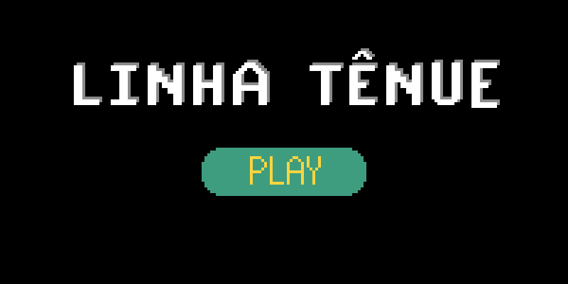

Nessa página nós teremos meu portfólio com meus projetos!
|  | Esse projeto eu desenvolvi no ensino médio para um projeto de conclusão do curso de desenvolvimento de jogos. Esse projeto foi feito em 2018 e o tema foi empatia e conexões. O projeto foi desenvolvido com Unity, seguindo o desenvolvimento ágil Scrum. Devido o desenvolvimento desse jogo, meu grupo e eu fomos para a game XP. Esse projeto foi essencial para meu crescimento na área de tecnologia e foi o motivo para minha escolha para minha universidade. Um ponto importante sobre esse projeto é que gosto bastante de jogos e jogos me influenciaram a desenvolver um jogo legal para meus usuários. |